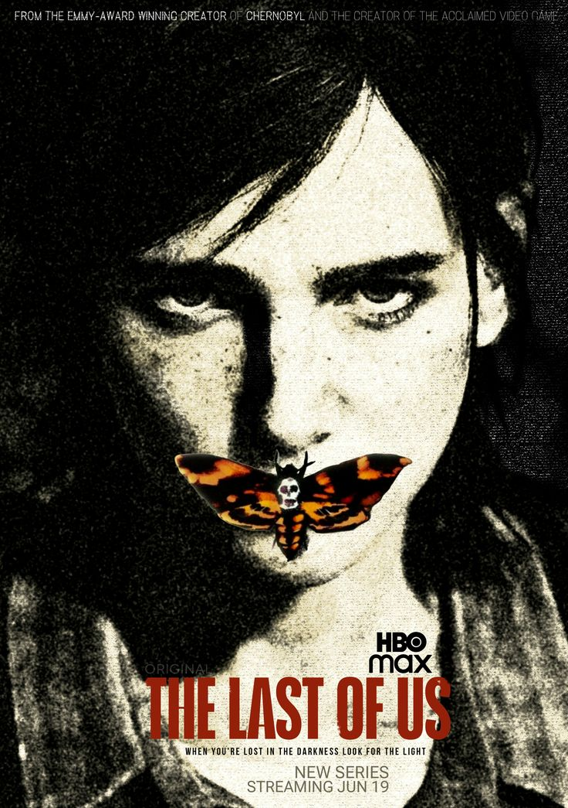
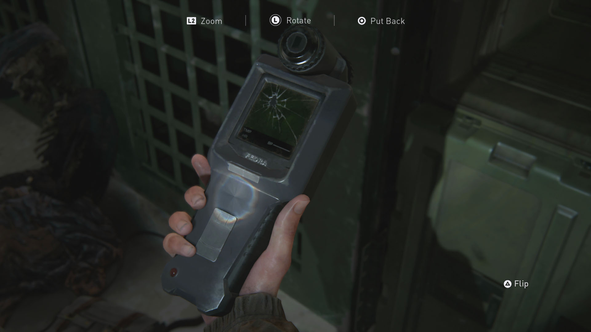
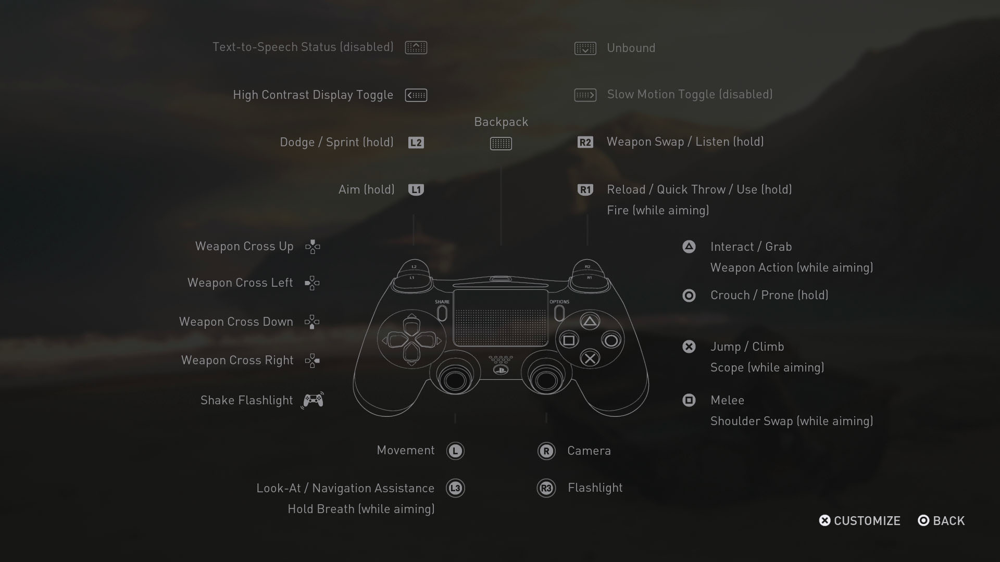
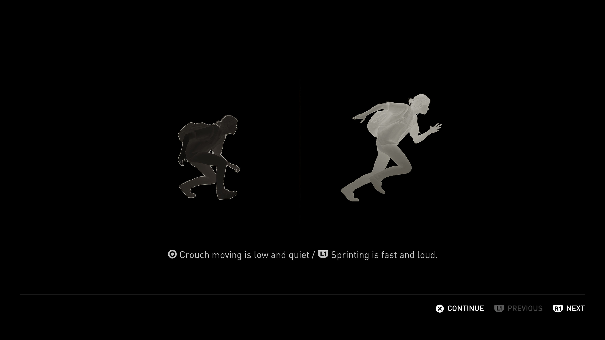
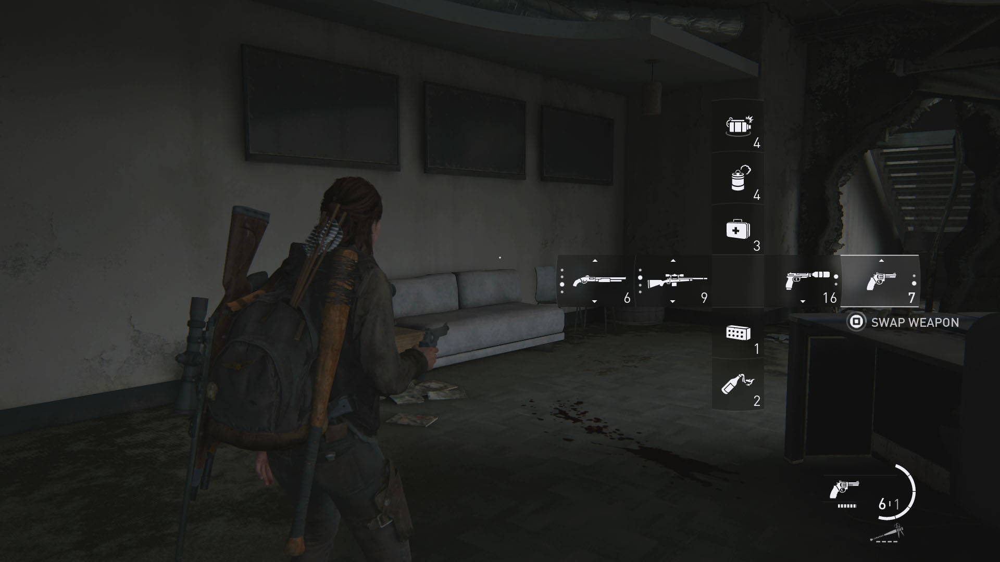
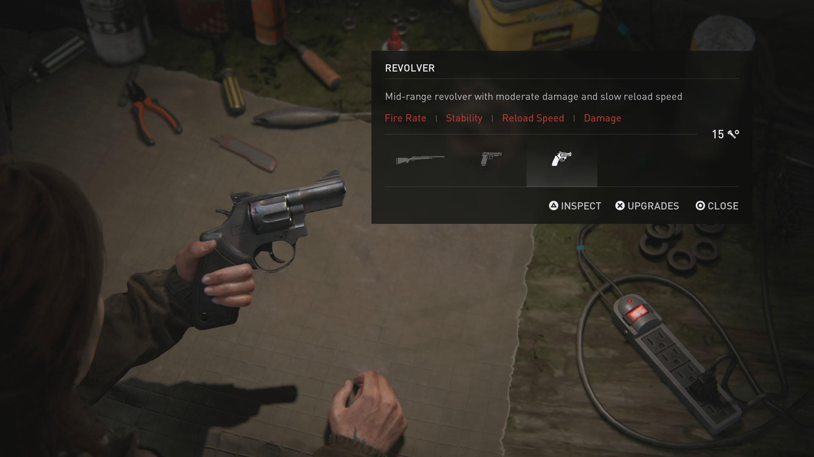
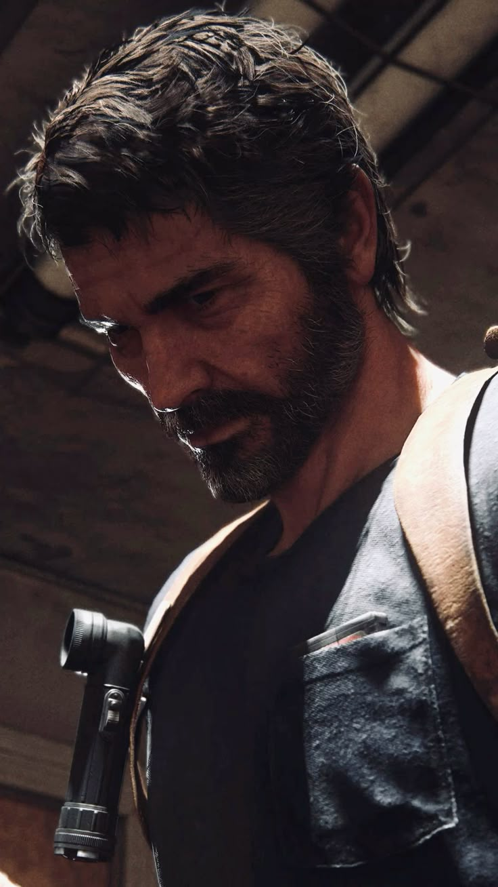

My Favorite Video Game
The Last of Us is my favorite game series of all time. Nothing else comes close. The first game was released in 2013 and remastered in 2014. The Last of Us Part II was released in 2020, and the first game was remade as The Last of Us Part I in 2022. I spent about half a month playing the whole story from Part I to Part II. I really love the art style and the writing of the story. This series showed me how much care and hard work it takes to create a great game.

Why I Like This Game
- The art style is very realistic.
- The characters are well developed.
- I like the themes explored in the story.
Click to see more
Overall, this game is very immersive. Naughty Dog made the world and the characters look very realistic, almost like real people and places. Every character feels alive and has their own personality. Because of this, I feel completely involved in the story when I play the game.
My Favorite UI Designs
I also like the interface design in The Last of Us Part II. The game often uses simple icons, a small amount of text, and dark transparent menus. This keeps the information clear without taking me completely out of the game world.

Inspecting an Artifact
This interface is very simple. The controls are placed at the edges of the screen, so the object remains the main focus. I like that the game gives enough information without covering the artifact.

Custom Controls
This screen organizes many controls around one picture of the controller. The thin white lines and simple symbols make a large amount of information easier to understand.

Movement Tutorial
I like the strong contrast in this tutorial. The two figures quickly explain the difference between quiet and loud movement, so the player does not need to read much.

Weapon Switcher
The weapon menu appears directly over the gameplay. Its transparent background, white icons, and cross-shaped layout let the player change weapons quickly while still seeing what is happening around Ellie.

Weapon Upgrade Workbench
This menu uses a dark transparent panel and a small amount of red to highlight important choices. The weapon stays visible beside the information, which makes the menu feel connected to the game world.
My Favorite Characters
-
Ellie

I like Ellie because of her loyalty to Joel. In Part II, even though they still had many problems that they did not solve, she traveled far from home to find the person who killed him. She is also very strong and brave. Sometimes, it feels like she can fight a whole army by herself.
-
Joel

The first thing I like about Joel is his toughness and determination. I do not think it is bad for a story to have a main character with a lone-wolf personality. Joel is definitely not a hero, but I like how far he is willing to go to protect his family. He is also brave, calm, and strong.
Why the Story Stays With Me
I like how the story uses revenge and redemption between a small group of people to talk about the apocalypse and human nature. I also like how Part II tells its story from two different points of view. It helped me understand both sides of the story and made the experience more powerful. It also made me think about revenge, forgiveness, and human nature. That is why I love this series so much.